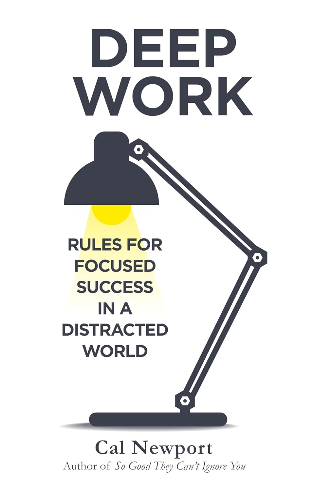

"Deep Work: Rules for Focused Success in a Distracted World"

- Read on 2026-05-20
- Rating: ️️️️️
- Format: 🎧 (7 hours 44 minutes)
I appreciate how the author suggests that "deep work" is a skill we simply can exercise to get better at, but also that there is a reasonable cap. I also like the strong encouragement to simply be intentional with not only your use of time, but your scheduling of time. At the same time - I don't have the exact quote - to say the goal isn't to have you do those other activities less, but to get more value out of your time. Now, if I could find a place that sells self-discipline.
- Prior: The Daylight War
- Next: Neverwhere